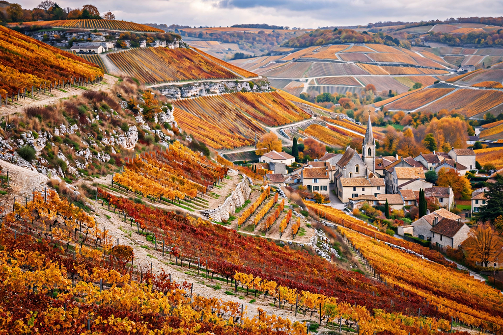

From Wikipedia, the free encyclopedia

| Burgundy (Bourgogne) | |
|---|---|
| Country | France |
| Modern region | Bourgogne-Franche-Comté (since 2016) |
| Former region | Bourgogne (to 2015): departments Côte-d'Or, Saône-et-Loire, Yonne, Nièvre |
| Capital | Dijon |
| Famous for | Burgundy wine, Romanesque art, Dijon mustard, Charolais cattle |
Burgundy (French: Bourgogne) is a historical territory and former administrative region of east-central France, taking its name from the Burgundians, an East Germanic tribe that settled the area in late antiquity. Centred on its capital Dijon, Burgundy is world-renowned for its wines — the Pinot noir and Chardonnay vineyards of the Côte d'Or produce some of the most expensive bottles on earth — as well as for Romanesque churches, medieval monasteries, mustard, and a rich gastronomic tradition. In 2016 the former region of Burgundy was merged with Franche-Comté to form Bourgogne-Franche-Comté.
The first Kingdom of the Burgundians (443–534) was established in Sapaudia (Savoy) and the Rhône valley before being conquered by the Franks. The name thereafter attached to shifting territories: a Frankish kingdom, a county, and from 1032 the Duchy of Burgundy held by a cadet line of the French Capetian kings. Burgundy's golden age came under the four Valois dukes (1363–1477), whose "Burgundian State" stretched from Dijon to Flanders and the Netherlands and whose court at Dijon and Bruges set the standard for late-medieval magnificence. When Charles the Bold was killed at the Battle of Nancy in 1477, Louis XI seized the duchy for the French crown, while the Burgundian Netherlands passed to the Habsburgs. Burgundy remained a distinct province (gouvernement) with its own Estates until the French Revolution.
The historic region spans the departments of Côte-d'Or, Saône-et-Loire, Yonne, and Nièvre, a landscape of limestone escarpments (the côtes), river valleys (Saône, Yonne, Loire), the Morvan uplands, and the Charolais hills, famed for white Charolais cattle. The Burgundy Canal (completed 1832) links the Yonne and Saône.
Burgundy wine is organised around terroir — precisely delimited vineyard plots called climats, inscribed by UNESCO in 2015. The Côte d'Or divides into the Côte de Nuits (great reds from villages such as Gevrey-Chambertin and Vosne-Romanée, home of Romanée-Conti, often the world's most expensive wine) and the Côte de Beaune (reds from Pommard and Volnay; whites from Meursault and Puligny-Montrachet). Monastic orders, especially the Cistercians of Cîteaux (founded 1098 near Dijon), mapped and walled the vineyards in the Middle Ages. Chablis (in the Yonne), the Côte Chalonnaise, and the Mâconnais complete the region's five main wine areas.
Burgundy is dense with Romanesque art: the basilica of Vézelay (a starting point of the pilgrimage to Santiago de Compostela), the abbeys of Cluny (once the largest church in Christendom) and Fontenay, and the cathedral of Autun with Gislebertus's sculpture. Cistercian and Cluniac monasticism spread from Burgundy across Europe. The Hospices de Beaune, founded in 1443, holds a famous charity wine auction each November.
The cuisine is hearty and wine-based: bœuf bourguignon, coq au vin, escargots de Bourgogne (snails in garlic-parsley butter), œufs en meurette (poached eggs in red-wine sauce), gougères (cheese puffs), Époisses cheese — famously pungent — and Dijon mustard and crème de cassis. The phrase "Burgundy" also denotes the deep wine-red colour named after the region's red wines.